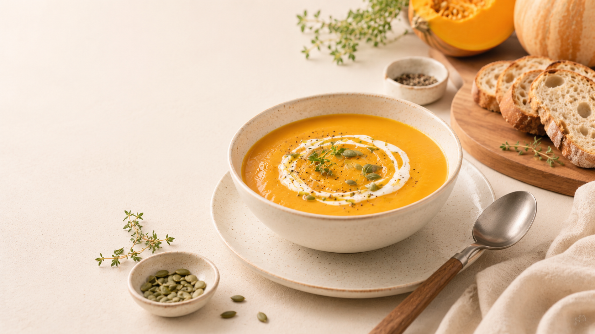
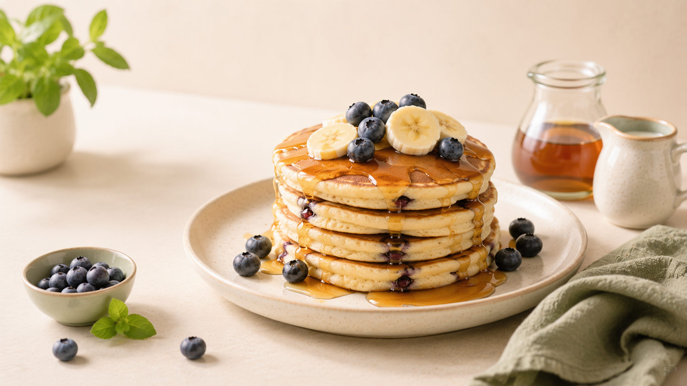
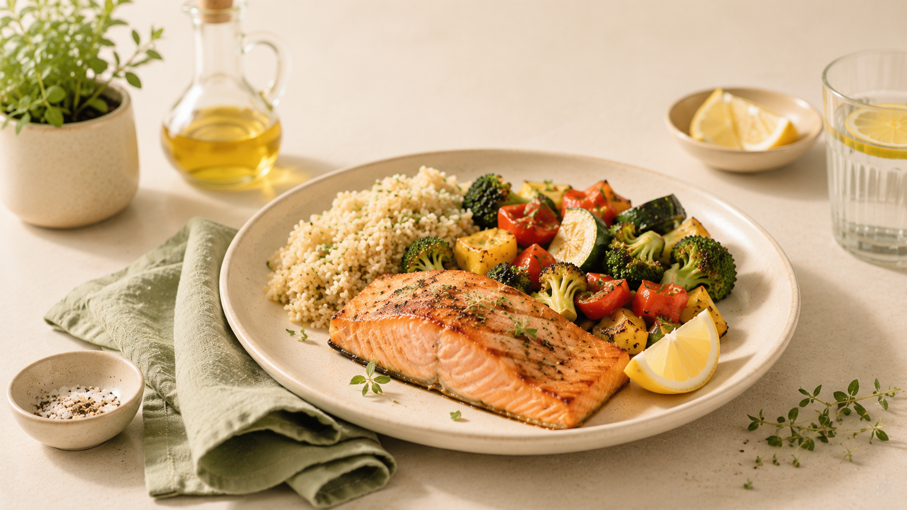
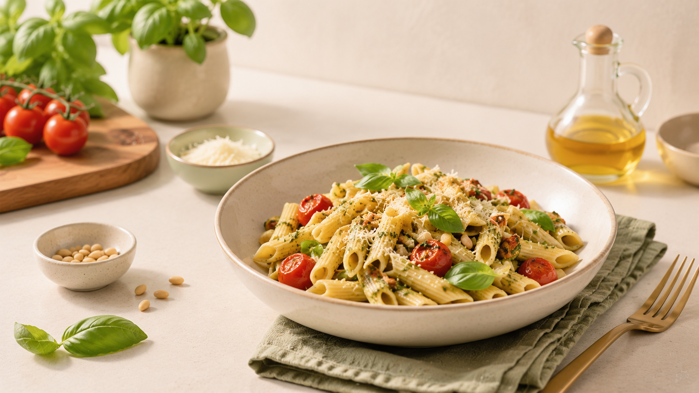

Cozy Batch
Pumpkin Soup
Perfect scaling every time
Create recipes, add ingredients, and adjust measurements based on your target servings. RecipeScale keeps the kitchen math clear, fast, and accurate.




Simplify your kitchen workflow with focused tools for scaling, saving, and reusing recipes.
Adjust recipe servings quickly while keeping every ingredient proportional.
Save favorite recipes locally in your browser and return to them anytime.
Review a clean scaled ingredient list before you start measuring.
Join thousands of home cooks scaling their culinary dreams with precision.